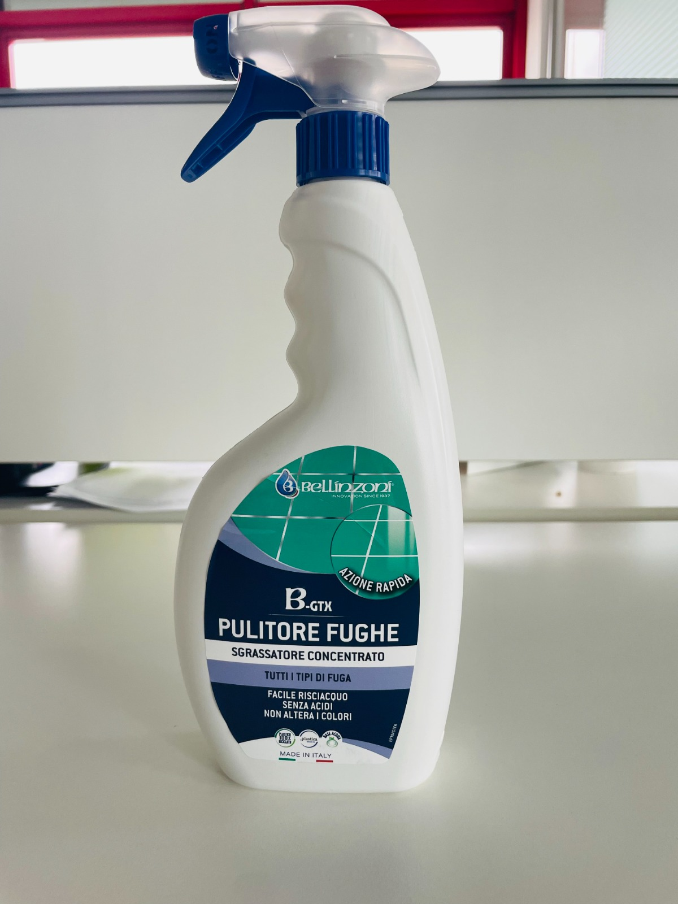

01 / 02
B.GTX
Pulitore Fughe
Pulitore concentrato ad azione rapida per la pulizia e lo sgrassaggio delle fughe.
- ✓ Azione rapida
- ✓ Per tutti i tipi di fuga
- ✓ Senza acidi
- ✓ Non altera i colori
- ✓ Facile risciacquo
- ✓ Made in Italy